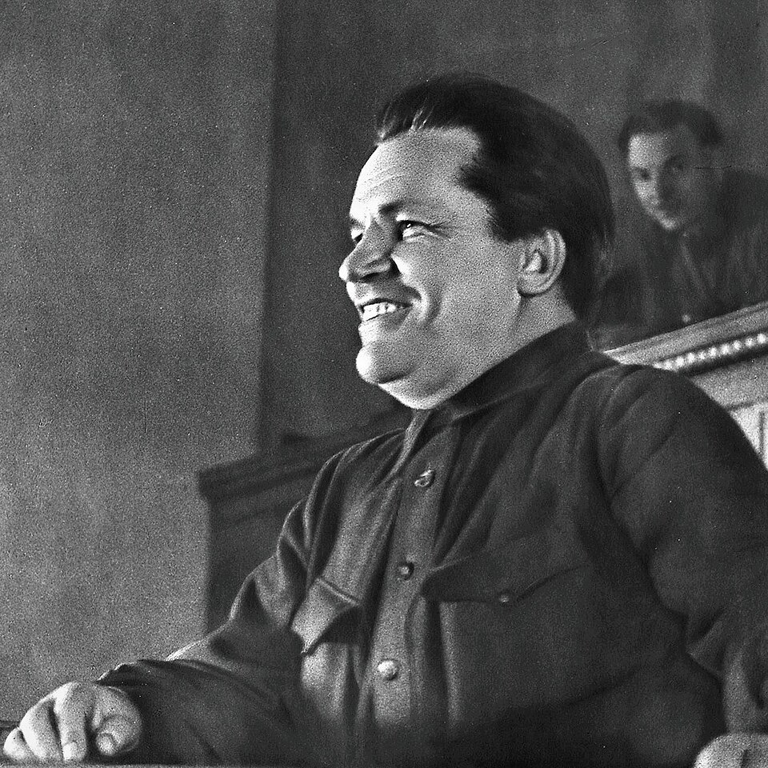

A42-POL-027 // HISTORICAL CLAIM REVIEW
The Kirov Assassination and Stalin-Era Purges
Assessment: The killing and its exploitation to intensify state repression are documented.


The precise allegation
Sergei Kirov, a senior Soviet official, was shot in Leningrad in 1934. Stalin's government claimed a broad opposition conspiracy and used the killing to accelerate purges. Later allegations that Stalin personally arranged Kirov's death remain disputed: suspicious security failures and political benefit are not equivalent to proof of an order.
Chronology and political context
Leonid Nikolaev killed Kirov at the Smolny Institute on December 1, 1934. Soviet authorities quickly arrested alleged associates, changed criminal procedure, and launched executions and mass arrests. The murder became a pretext for repression that culminated in the Great Terror, although the exact causal relationship between Kirov's death and Stalin's planned purges remains a subject of historical debate.
Primary historical record
Soviet investigation files, trial proceedings, security records, and Politburo documents establish Nikolaev's arrest and the state's rapid use of the crime. The official proceedings were coercive and unreliable by modern standards. Archival releases after 1991 improved access, but Soviet security files were selectively preserved and some crucial evidence may never have survived.
Corroboration and contrary evidence
Researchers agree that the state used the killing to destroy real and imagined opposition. Robert Conquest and later historians differ about Stalin's direct role; archival work has not yielded a conclusive signed directive. Nikolaev's known grievance, suspicious access to Smolny, and security lapses fuel theories, while no reliable forensic evidence establishes who arranged those failures.
What remains uncertain
Whether Nikolaev acted alone, whether another person exploited his grievance, and whether senior police officials deliberately facilitated the shooting remain unresolved. Stalin benefited politically, but benefit is circumstantial. Confessions extracted under torture cannot independently validate the conspiracy narrative, whether it is the official anti-Stalinist-opposition version or the counterclaim of Stalin's orchestration.
Calibrated verdict
The killing and its exploitation to intensify state repression are documented. A direct Stalin order is plausible to some historians but not proven by public primary evidence. The most secure verdict separates the known murder, the demonstrably coercive official narrative, and an unresolved attribution question about higher-level planning.
What evidence could change this assessment
A newly authenticated chain of contemporaneous communications directing the killing, or records showing Nikolaev's independent preparation and unmonitored access, could shift the balance. Independent evidence about security instructions matters more than coerced confessions. A complete corroborated record of Stalin's knowledge before the shooting would be especially consequential.
Sources and source limits
- Wilson Center Digital Archive — Kirov assassination documentsSearchable collection of Soviet-era documents and translations; curation improves access but the archive is not a complete file of all security records.
- Encyclopaedia Britannica — Sergei KirovBiographical summary and political context; tertiary reference that simplifies disagreements over Stalin's role.
- J. Arch Getty and Oleg V. Naumov, The Road to Terror (Yale University Press)Uses party archival records to analyze the purges; archival evidence is substantial but does not definitively settle who ordered Kirov's murder.